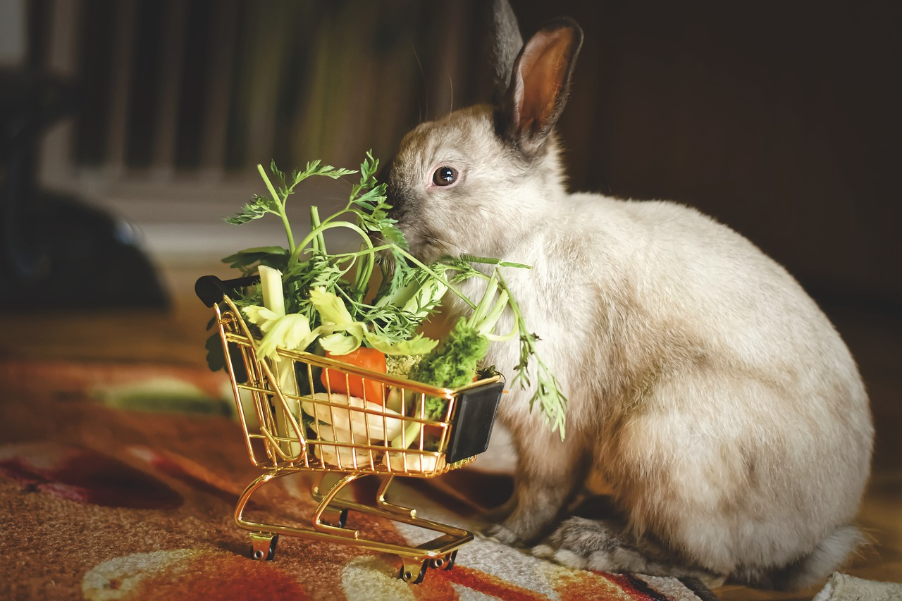

Rabbits in the wild all over the world successfully consume a wide variety of plant material.
Various types of dry and fresh grasses and plants with leaves comprise the largest portion of the wild rabbit diet.
Rabbits will also eat bark on trees, tender twigs and sprouts, fruits,
seeds and other nutritious foods in much small amounts. This is important to know when we decide what is a healthy diet for our house rabbits.
LIST OF POSSIBLE FOODS TO FEED
NOTE: It is always preferable to buy organic produce if at all possible. If collecting wild foods such as dandelion greens, make sure they are from a pesticide-free area. All fresh foods regardless of the source should be washed or scrubbed (in the case of hard vegetables) before serving them to your rabbit.
LEAFY GREENS
These foods should make up about 75% of the fresh portion of your rabbit’s diet (about 1 packed cup per 2 lbs of body weight per day).
Leafy Greens I (need to be rotated due to oxalic acid content and only 1 out of three varieties of greens a day should be from this list)
- Parsley
- Spinach
- Mustard greens
- Beet greens
- Swiss chard
- Radish tops
- Sprouts (from 1 to 6 days after sprouting, sprouts have higher levels of alkaloids)
Leafy Greens II (low in oxalic acid)
- Arugula
- Carrot tops
- Cucumber leaves
- Endive
- Ecarole
- Frisee Lettuce
- Kale (all types)
- Mache
- Red or green lettuce
- Romaine lettuce
- Spring greens
- Turnip greens
- Dandelion greens
- Mint (any variety)
- Basil (any variety)
- Watercress
- Wheatgrass
- Chicory
- Raspberry leaves
- Cilantro
- Radicchio
- Bok Choy
- Fennel (the leafy tops as well as the base)
- Borage leaves
- Dill leaves
- Yu choy
NON-LEAFY VEGETABLES
These should be no more than about 15 % of the diet (About 1 tablespoon per 2 lbs of body weight per day).
- Carrots
- Broccoli (leaves and stems)
- Edible flowers (roses, nasturtiums, pansies, hibiscus)
- Celery
- Bell peppers (any color)
- Chinese pea pods (the flat kind without large peas)
- Brussel sprouts
- Cabbage (any type)
- Broccolini
- Summer squash
- Zucchini squash
- FRUITS
These should be no more than 10% of the diet (about 1 teaspoon per 2 lbs of body weight per day). NOTE: unless otherwise stated it is more nutritious to leave the skin on the fruit (particularly if organic), just wash thoroughly. IF you are in doubt about the source of the fruit and you are concerned about chemicals in the skin, then remove it.
- Apple (any variety, without stem and seeds)
- Cherries (any variety, without the pits)
- Pear
- Peach
- Plum (without the pits)
- Kiwi
- Papaya
- Mango
- Berries (any type)
- Berries (uncooked)
- Pineapple (remove skin)
- Banana (remove peel; no more than about 2 1/8 inch slices a day for a 5 lb rabbit…they LOVE this!)
- Melons (any – can include peel and seeds)
- Star Fruit
- Apricot
- Currants
- Nectarine